Advertencia: Consulte Advertencia sobre la desconexión de la batería en la sección Prólogo
- Abra el capó.
- Despresurice el sistema de combustible. Consultar Descarga de la presión del combustible .
- Desconecte el cable negativo de la batería. Consultar Desconexión y conexión del cable de batería negativo .
- Recupere el refrigerante del aire acondicionado (A/A). Consultar Recuperación y recarga del agente frigorífico .

- Desconecte el mazo de cables del motor (1) en el espacio para las piernas.
- Desmonte el capó. Consultar Sustitución del capó .
- Desmonte el panel inferior de la cámara. Consultar Sustitución del panel inferior de la cámara .
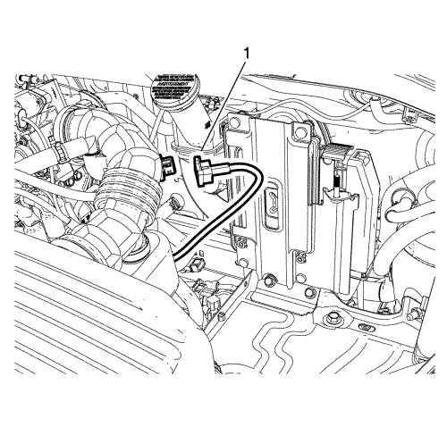
- Desenchufe el conector del sensor de temperatura del aire de admisión (1).
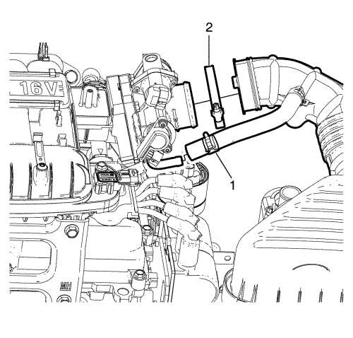
- Desmonte las abrazaderas (1, 2).
- Gire y tire de los tubos flexibles para desmontar el conjunto del cuerpo del acelerador.

- Desconecte el cable del acelerador, si procede.
- Desmonte la batería Consultar Sustitución de la batería .
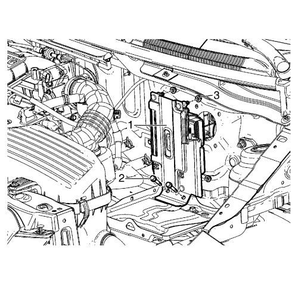
- Extraiga los pernos de retención (2) del soporte del módulo de control del motor (ECM) a la bandeja de la batería.
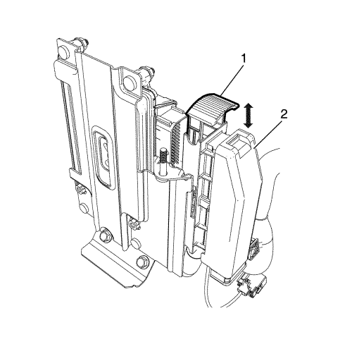
- Tire de la palanca del conector eléctrico (1) del módulo de control del motor (ECM) y desenchufe el conector eléctrico (2) del módulo de control del motor (ECM).
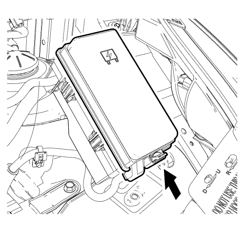
- Desmonte la cubierta del centro eléctrico de la carrocería (BEC) bajo el capó.
Trinquete de desbloqueo (flecha).

- Extraiga la tuerca de retención (1) del cable positivo al centro eléctrico de la carrocería (BEC).
- Tire del cable positivo (3) para separar el retenedor del cable positivo (2) de la carrocería.

- Levante la placa superior con la herramienta adecuada.
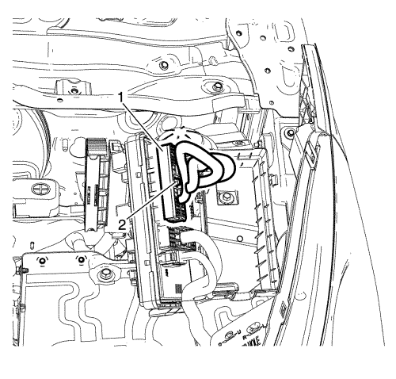
- Extraiga los pernos de retención (2) de la placa superior BEC bajo el capó a la placa inferior.
- Desconecte el enchufe del mazo de cables (1) del bloque de fusibles del compartimento delantero.

- Extraiga el perno (1) de masa y aparte el mazo de cables (2).
- Desenchufe el conector del sensor de velocidad de las ruedas (3).
- Desmonte y aparte el retenedor del mazo de cables (4) con la herramienta adecuada.
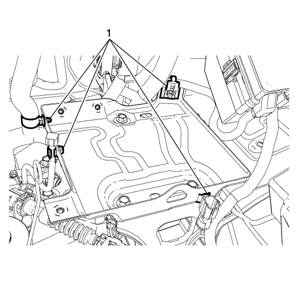
- Desmonte los retenedores (1) de la bandeja de la batería con una herramienta adecuada.
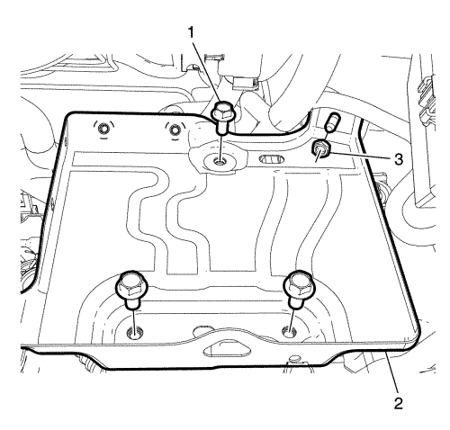
- Extraiga los pernos (1) y la tuerca (3).
- Desmonte la bandeja de la batería (2)

- Desmonte el mazo de cables del motor (2) de la mampara (1).
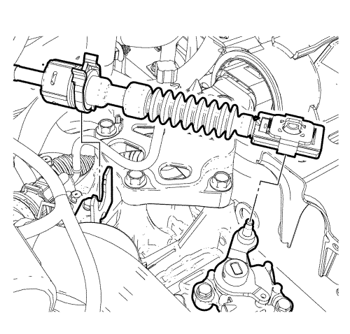
- Desconecte el terminal del cable de la palanca selectora del cambio del pasador de la palanca de la transmisión. Consultar Sustitución del cable de la palanca del cambio manual y de la palanca selectora .

- Desconecte el tubo flexible de vacío (1) del servofreno de vacío eléctrico (2).
- Retire el tapón del vaso de expansión.
- Elevar el vehículo y soportarlo de manera segura. Consultar Elevación del vehículo con un gato .
- Desmonte las ruedas delanteras. Consultar Desmontaje y montaje de los neumáticos y las ruedas .
- Desmonte el panel del parachoques delantero. Consultar Sustitución del panel del parachoques delantero .

- Retire los 3 pernos de cubierta.
- Extraiga la cubierta (2).

- Coloque un envase adecuado bajo el radiador y el motor.
- Drene el sistema de refrigerante desconectando el tubo flexible inferior como se indica.
- Bajar el vehículo.
- Afloje la abrazadera del tubo flexible de salida del radiador (2).
- Retire el tubo flexible de salida del radiador (1) del tubo de salida de la bomba de agua (3).
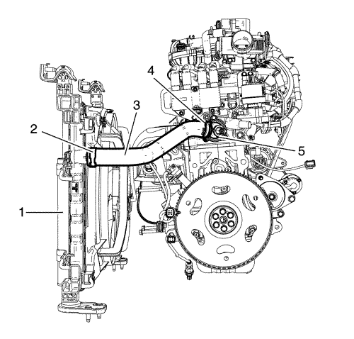
- Afloje la abrazadera del tubo flexible de entrada del radiador (4).
- Afloje el tubo flexible de entrada del radiador (3) de la carcasa del termostato de refrigerante del motor (5).

- Desconecte el conector (1) del módulo del ventilador.

- Desenchufe el conector (2) del sensor de temperatura del aire ambiente si procede.
- Desconecte el tubo flexible de refrigerante (1) del CRFM.
- Desconecte el mazo de cables del sensor de temperatura del refrigerante del motor (radiador).
- Suelte los 6 clips del panel del compartimento delantero.
- Desmonte los 2 paneles del compartimento delantero.

- Desmonte la tuerca del tubo flexible del compresor y el condensador del A/C (1) del condensador del A/C (2).

- Desmonte el perno del tubo flexible del condensador y compresor de A/C (1) del compresor de A/C (2).
- Desmonte el tubo flexible del condensador y compresor del A/C

- Desmonte el perno del conjunto del tubo flexible del evaporador de A/C que va al compresor de A/C (2).
- Desconecte el conjunto del tubo flexible del evaporador de A/C del compresor de A/C.
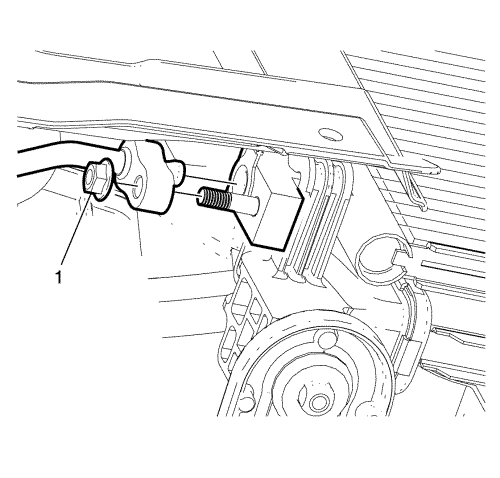
- Desmonte la tuerca del tubo flexible del compresor y el condensador del A/C (1) del condensador del A/C.
Nota: Las juntas tóricas de sellado del A/A son de un sólo uso y no pueden volver a sellarse. Monte las juntas tóricas de sellado NUEVAS cada vez que se desmonte la toma de succión/descarga del A/A del compresor del A/A.
- Desmonte y DESECHE las juntas tóricas de sellado del conducto de succión/descarga del A/A.
Nota: Tapone o selle inmediatamente los extremos del conducto de succión/descarga del A/A y los puertos del compresor para prevenir la contaminación y absorción de la humedad atmosférica.
- Tapone o selle los extremos de succión/descarga del A/A, los puertos del compresor y el condensador.
- Elevar el vehículo

- Afloje los 4 pernos de montaje del soporte del radiador (2).
| | Nota: se necesita un 2º técnico. |
| 58.1. | Retire los 4 pernos de montaje del soporte del radiador (2). |
| 58.2. | Desmonte la guarda del ventilador de refrigeración del motor, el condensador y el radiador (1) hacia abajo. |

- Desmonte el perno del tubo de la dirección asistida (1).
- Desmonte el tubo de la dirección asistida (3) del soporte del generador (2).
- Bajar el vehículo.

- Desmonte el tubo flexible de entrada de la dirección asistida (1) del conector del interruptor de presión de líquido (4).
Nota: Tape o cierre el tubo flexible de entrada de la dirección asistida y el conector del interruptor de presión de líquido para impedir fugas de aceite hidráulico y/o contaminación.
- Tape o cierre el tubo flexible de entrada de la dirección asistida y el conector del interruptor de presión de líquido.
- Pellizque el tubo flexible de salida del depósito de líquido de la dirección asistida (3).
- Afloje la abrazadera para tubo flexible de salida del depósito de líquido de la dirección asistida (2).
- Desmonte el tubo flexible de salida del depósito de líquido de la dirección asistida (3) del depósito de líquido de la dirección asistida.
Nota: Tape o cierre el tubo flexible de salida de la dirección asistida para impedir fugas de aceite hidráulico y/o contaminación.
- Tape o cierre el tubo flexible de salida del depósito de líquido de la dirección asistida.

- Extraiga los pernos (1) del depósito del líquido de la dirección asistida, desenganche el depósito y colóquelo a un lado.
- Desconecte los tubos flexibles de refrigerante (3, 4, 7) del depósito de compensación de refrigerante.
- Extraiga los pernos de retención (2) del depósito de compensación de refrigerante a la carrocería.
- Desmonte el depósito de compensación de refrigerante (5).
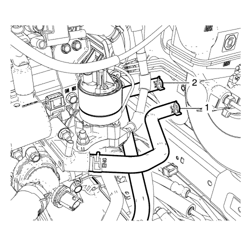
- Desconecte el tubo flexible de entrada (1) y de salida (2) del calefactor del conducto del calefactor.
Advertencia: Consulte Advertencia de tubería de emisiones de vapor y combustible en la sección Prólogo
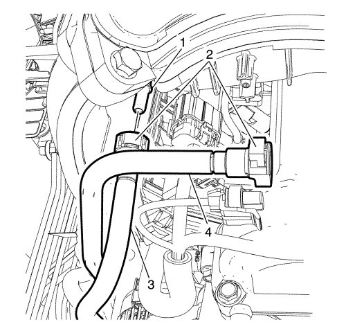
- Desconecte la toma de purga (4) de emisión de vapores (EVAP) del solenoide de purga.
Nota: Una vez completo el desmontaje, tapone las aperturas del tubo flexible con un paño limpio y sin pelusa para evitar la entrada de materiales extraños.
- Tapone o selle los extremos de la toma de purga (EVAP)(4) y del solenoide de purga.
- Desconecte el tubo flexible de alimentación de combustible (3) del conducto de alimentación de combustible (1).
- Tapone o selle los extremos del conducto de alimentación de combustible (1) y del tubo flexible de alimentación de combustible (3).
- Desmonte la pantalla térmica del escape. Consultar Sustitución de la pantalla térmica del colector de escape .
- Desmonte las 3 tuercas del catalizador.

- Corte la abrazadera de cable, si procede.
- Desconecte los enchufes del mazo de cables (1) de la sonda Lambda calentada 2.
- Elevar el vehículo

- Desmonte los dos pernos del soporte del catalizador (1) del soporte del catalizador (2).
Nota: se necesita un 2º técnico.
- Desmonte el tubo de escape con el catalizador incluido. Consultar Sustitución del tubo de escape .
- Desmonte el cable del embrague (3) y sáquelo del agujero del soporte del cable del embrague.
- Desmonte el conjunto de paragolpes del desembrague (2) del cable del embrague (3).
- Desmonte la tuerca de ajuste del cable de embrague (1).
- Desmonte de la mangueta de dirección las 2 barras de acoplamiento exterior del varillaje. Consultar Sustitución la barra de acoplamiento exterior del varillaje de la dirección .

- Desmonte la rótula del brazo de apoyo inferior al perno de retención de la mangueta (1) y separe la rótula de la mangueta.
- Desmonte de la transmisión los 2 ejes de accionamiento de rueda. Consultar Sustitución del semieje de la rueda delantera .
- Desmonte el soporte de montaje trasero de la caja de cambios. Consultar Sustitución del soporte del alojamiento trasero de la caja de cambios .
- Desmonte el montaje trasero de la caja de cambios. Consultar Sustitución del soporte de montaje trasero de la caja de cambios .
- Bajar el vehículo.
- Desmonte el sensor de presión absoluta del colector (MAP). Consultar Sustitución del sensor de presión absoluta del colector .
- Desmonte la válvula solenoide de purga anti-impurezas de emisión de vapores. Consultar Sustitución de la válvula magnética de purga del depósito de emisión de vapores .

- Desmonte el perno de la resistencia previa (1).
- Coloque la resistencia previa a un lado (2).

- Monte un dispositivo de elevación del motor adecuado (1).
- Monte un cable adecuado (4) en el dispositivo de elevación del motor (1).
- Monte un cable adecuado (4) en los 2 soportes de elevación del motor (3).
- Monte un cable adecuado (4) en el soporte de elevación de la caja de cambios (2).
- Extienda el dispositivo de elevación del motor (1) hasta que el cable de acero (4) esté ligeramente tensado.
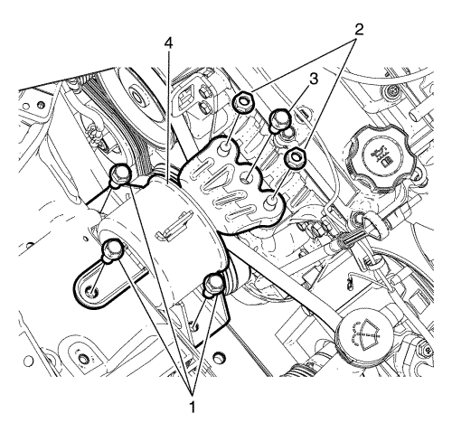
- Extraiga las 2 tuercas del soporte del motor (2).
- Extraiga el perno (3) del montaje del motor.
- Extraiga los 3 pernos de retención (1) del soporte del motor a la carrocería.
- Desmonte el soporte del motor (4).
- Desmonte el perno de la izquierda del alojamiento del cambio (1) del soporte del alojamiento del cambio.
- Desmonte la tuerca de la izquierda del alojamiento del cambio (2) del soporte del alojamiento del cambio.
- Extraiga los tornillos de montaje al cuerpo de la caja de cambios de la izquierda (1).
- Extraiga el soporte de la caja de cambios (2) del vehículo.
- Baje la unidad de la caja de cambios del motor.

Nota: se necesita un 2º técnico.
- Gire la unidad de la caja de cambios del motor (1) bajo el soporte de montaje de la caja de cambios (2).
Nota: se necesita un 3er técnico.
- Retire cuidadosamente la unidad de la caja de cambios del motor (1) hacia arriba.

- Desmonte el perno del plato inferior de la carcasa del embrague (1) y el plato inferior de la carcasa del embrague (2).
- Baje la unidad de la caja de cambios del motor en una paleta de madera.

- Extraiga los tornillos superiores del cambio (1).
Nota: se necesita un 2º técnico.
- Extraiga la caja de cambios
| 116.1. | Extraiga el tornillo inferior del cambio (2) |
| 116.2. | Extraiga la tuerca del cambio (3) |
| 116.3. | Separe la caja de cambios del motor. |
- Desmonte el plato de presión y el plato conducido del embrague. Consultar Sustitución del plato de presión y el plato conducido del embrague .
- Monte el motor en un soporte de motor adecuado.

- Extraiga el perno de retención (6) de masa del mazo de cables del motor al bloque motor.
- Extraiga la tuerca de retención del cable positivo de la batería al alternador.
- Desconecte el cable positivo de la batería (3) del alternador.
- Retire el mazo de cables del generador y el motor de arranque.
- Desenchufe el conector (1) del mazo de cables del alternador, el conector (2) del interruptor de presión de aceite y el conector (7) del sensor de picado.
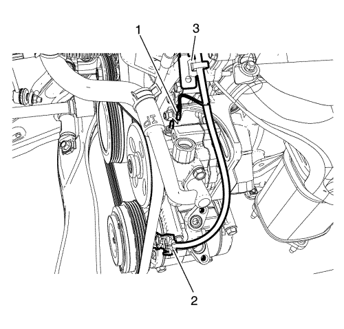
- Desenchufe el conector (1) de la dirección asistida y el conector eléctrico (2) del compresor de A/A.

- Desenchufe el conector del solenoide de purga del cartucho (1) y el conector eléctrico del mazo de cables del inyector (2).

- Desenchufe el conector (1) de la válvula de control de la guía de deslizamiento del colector de admisión y separe el mazo de cables (5) del colector de admisión.
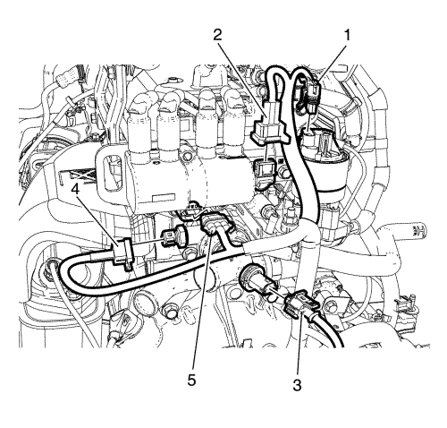
- Desenchufe el conector (1) de recirculación de gases de escape (EGR), el conector (2) del sensor de posición del árbol de levas, el conector (3) del termostato del calefactor, el conector (4) del sensor de temperatura del refrigerante del motor y el conector (5) DIS.

- Desconecte el conector (1) de la válvula de control de aire en ralentí (IACV) y el conector (2) del sensor de posición del acelerador (TPS).
- Desmonte el mazo de cables del motor del motor.
- Extraiga el alternador. Consultar Sustitución del generador .
- Desmonte la bomba de la dirección asistida. Consultar Sustitución de la bomba de la dirección asistida .
- Desmonte el compresor de A/C. Consultar Sustitución de compresor de aire acondicionado .
- Transfiera las piezas según sea necesario.
- Desmonte el motor del soporte de motor.
- Transfiera el cable de acero a los soportes de elevación del motor.
- Monte el NUEVO motor en un banco de motor adecuado.
- Monte el compresor de A/C. Consultar Sustitución de compresor de aire acondicionado .
- Monte la bomba de la servodirección . Consultar Sustitución de la bomba de la dirección asistida .
- Instale el alternador. Consultar Sustitución del generador .
- Coloque el mazo de cables del motor en el motor.
- Conecte el conector (1) de la válvula de control de aire en ralentí (IACV) y el conector (2) del sensor de posición del acelerador (TPS).
- Emborne el conector (1) de recirculación de gases de escape (EGR), el conector (2) del sensor de posición del árbol de levas, el conector (3) del termostato del calefactor, el conector (4) del sensor de temperatura del refrigerante del motor y el conector (5) DIS.
- Enchufe el conector (1) de la válvula de control de la guía de deslizamiento del colector de admisión y acople el mazo de cables (5) al colector de admisión.
- Enchufe el conector del solenoide de purga del cartucho (1) y el conector eléctrico del mazo de cables del inyector (2).
- Acople el clip (3) del mazo de cables del motor al soporte.
- Enchufe el conector (1) de la dirección asistida y el conector eléctrico del compresor de A/A.
- Enchufe el conector (1) del mazo de cables del alternador, el conector (2) del interruptor de presión de aceite y el conector (7) del sensor de picado.
Precaución: Consulte Precaución con las fijaciones en la sección Prólogo
- Introduzca el perno (6) de masa del mazo de cables del motor al bloque motor y apriete a 50 N·m (37 lib. pie).
Nota: se necesita un 2º técnico.
- Desmonte el motor de su soporte usando el dispositivo de elevación del motor.
- Baje el motor sobre una paleta de madera.
- Monte el plato de presión y el plato conducido del embrague. Consultar Sustitución del plato de presión y el plato conducido del embrague .
Nota: se necesita un 2º técnico.
- Monte la caja de cambios en el motor.
| 18.1. | Monte la tuerca inferior (3) del cambio, y apriétela a 61 N·m (45 lb pie). |
| 18.2. | Monte el tornillo inferior (2) del cambio, y apriételo a 61 N·m (45 lb pie). |
- Monte los tornillos superiores (1) del cambio, y apriételos a 61 N·m (45 lb pie).
- Monte un cable adecuado en el soporte de elevación de la caja de cambios.
- Levante la unidad de la caja de cambios del motor usando el dispositivo de elevación del motor.
- Monte el tornillo (1) del plato inferior de la carcasa del embrague y el plato inferior (2) de la carcasa del embrague, y apriételos a 10 N·m (89 lb pulg.).
Nota: se necesita un 3er técnico.
- Monte cuidadosamente la unidad de la caja de cambios del motor (1) hacia abajo.
Nota: se necesita un 2º técnico.
- Gire la unidad de la caja de cambios del motor (1) bajo el soporte de montaje de la caja de cambios (2) en la posición correcta.
- Levante el dispositivo de elevación del motor y coloque la unidad de la caja de cambios del motor.
- Monte el soporte de la caja de cambios (2) en el vehículo.
- Monte los tornillos de montaje al cuerpo de la caja de cambios (1) y apriételos hasta 50 N·m (37 lib. pie).
- Instale la tuerca de la izquierda del alojamiento del cambio (2) en el soporte del soporte del alojamiento del cambio y apriétela a 75 N·m (55 lib. pie).
- Instale el NUEVO perno de la izquierda del alojamiento del cambio (1) en el soporte del soporte del alojamiento del cambio y apriételo a 75 N·m (55 lib. pie).
- Monte el soporte del motor (4).
- Introduzca los 3 pernos de retención (1) del soporte del motor a la carrocería y apriételos a 50 N·m (37 lib. pie).
- Introduzca el perno (3) y apriételo a 58 N·m (43 lib. pie).
- Introduzca las 2 tuercas (2) y apriételas a 58 N·m (43 lib. pie).
- Baje el dispositivo de elevación del motor (1).
- Desmonte el cable de acero (4) del soporte de elevación de la caja de cambios (2).
- Desmonte el cable de acero (4) de los 2 soportes de elevación del motor (3).
- Desmonte el cable de acero (4) del dispositivo de elevación del motor (1).
- Monte la resistencia previa (2).
- Monte y apriete el perno de la resistencia previa (1).
- Monte la válvula solenoide de purga anti-impurezas de emisión de vapores. Consultar Sustitución de la válvula magnética de purga del depósito de emisión de vapores .
- Monte el sensor de presión absoluta del colector (MAP). Consultar Sustitución del sensor de presión absoluta del colector .
- Elevar el vehículo
- Monte el montaje trasero de la caja de cambios. Consultar Sustitución del soporte de montaje trasero de la caja de cambios .
- Monte el soporte de montaje trasero de la caja de cambios. Consultar Sustitución del soporte del alojamiento trasero de la caja de cambios .
- Monte en la transmisión los 2 ejes de accionamiento de rueda. Consultar Sustitución del semieje de la rueda delantera .
- Monte la rótula del brazo de apoyo inferior en la mangueta.
- Monte el tornillo de retención (1) que sujeta la rótula del brazo de apoyo inferior a la mangueta, y apriételo a 65 N·m (48 lb pie).
- Monte en la mangueta de dirección las 2 barras de acoplamiento exterior del varillaje. Consultar Sustitución la barra de acoplamiento exterior del varillaje de la dirección .
- Monte el cable del embrague (3) al agujero del soporte del cable del embrague.
- Monte el conjunto de paragolpes del desembrague (2) en el cable del embrague (3).
- Monte la tuerca de ajuste del cable (1).
Nota: se necesita un 2º técnico.
- Monte el tubo de escape con el catalizador incluido. Consultar Sustitución del tubo de escape .
- Monte los 2 tornillos (1) del soporte del catalizador en el soporte (2) del catalizador, y apriételos a 46 N·m (34 lb pie).
- Bajar el vehículo.
- Conecte los enchufes del mazo de cables (1) de la sonda Lambda calentada 2.
- Monte una abrazadera de cable en los 3 mazos de cables.
- Monte las 3 tuercas del catalizador, y apriételas a 46 N·m (34 lb pie).
- Monte la pantalla térmica del escape. Consultar Sustitución de la pantalla térmica del colector de escape .
Advertencia: Consulte Advertencia de tubería de emisiones de vapor y combustible en la sección Prólogo
- Desmonte el tapón o el sello de los extremos del conducto de alimentación de combustible (1) y del tubo flexible de alimentación de combustible (3).
- Conecte el tubo flexible de alimentación de combustible (3) al conducto de alimentación de combustible (1).
- Desmonte el tapón o el sello de los extremos de la toma de purga (EVAP)(4) y del solenoide de purga.
- Conecte la toma de purga (4) de emisión de vapores (EVAP) al solenoide de purga.
- Conecte el tubo flexible de entrada (1) y de salida (2) del calefactor al conducto del calefactor.
- Monte el depósito de compensación de refrigerante (5) al soporte montado en el soporte del motor.
- Apriete los pernos de retención (2) del depósito de compensación de refrigerante a la carrocería a 9 N·m (80 lib. pulg.).
- Conecte los tubos flexibles de refrigerante (3, 4, 7) al depósito de compensación de refrigerante.
- Monte el depósito del líquido de la dirección asistida en el depósito de compensación de refrigerante.
- Apriete los pernos (1) del depósito del líquido de la dirección asistida a 9 N·m (80 lib. pulg.).
- Desmonte el tapón o tapa del tubo flexible de salida del depósito de líquido de la dirección asistida.
- Monte el tubo flexible de salida del depósito de líquido de la dirección asistida (3) en el depósito de líquido de la dirección asistida.
- Monte la abrazadera para tubo flexible de salida del depósito de líquido de la dirección asistida (2).
- Suelte el dispositivo usado para pinzar el tubo flexible de salida del depósito de líquido de la dirección asistida (3).
- Retire el tapón o la tapa del tubo flexible de entrada de la dirección asistida y el conector del interruptor de presión de líquido.
- Monte el tubo flexible (1) de entrada de la dirección asistida en el conector (4) del presostato de aceite, y apriételo a 28 N·m (21 lb pie).
- Elevar el vehículo
- Monte el tubo de la dirección asistida (3) en el soporte del generador (2).
- Monte el perno del tubo de la dirección asistida (1).
Nota: se necesita un 2º técnico.
- Monte la guarda del ventilador de refrigeración del motor, el condensador y el radiador (1) hacia arriba.
Monte los 4 pernos de montaje del soporte del radiador (2).
- Apriete los 4 tornillos de montaje (2) del soporte del radiador a 22 N·m (16 lb pie).
- Bajar el vehículo.
- Desmonte el tapón o el sello de los extremos del conducto de succión/descarga del A/A, los puertos del compresor y el condensador.
Nota: Las juntas tóricas de sellado del A/A deben ajustarse en seco. NO lubrique las juntas tóricas de sellado del A/A.
- Monte una junta tórica NUEVA.
- Monte el tubo flexible del compresor y el condensador al condensador de A/A y apriete la tuerca (1) a 10 N·m (89 lib. pulg.).
- Conecte el conjunto del tubo flexible del evaporador del A/A en el compresor (2) del A/A.
- Monte el tornillo que sujeta el conjunto del tubo flexible del evaporador del A/A al compresor del A/A, y apriételo a 22 N·m (16 lb pie).
- Monte el tubo flexible del condensador y compresor del A/C
- Monte el tornillo (1) que sujeta el tubo flexible del condensador del A/A al compresor (2) del A/A, y apriételo a 22 N·m (16 lb pie).
- Monte la tuerca (1) que sujeta el tubo flexible del compresor y del condensador del A/A al condensador (2) del A/A, y apriétela a 10 N·m (89 lb pulg.).
- Monte los 2 paneles del compartimento delantero.
- Coloque los 6 clips del panel del compartimento delantero.
- Conecte el tubo flexible de refrigerante (1) al CRFM.
- Enchufe el conector (2) del sensor de temperatura del aire ambiente si procede.
- Conecte el mazo de cables del sensor de temperatura del refrigerante del motor (radiador).
- Enchufe el conector (1) del módulo del ventilador.
- Monte el tubo flexible de entrada del radiador (3) en la carcasa del termostato de refrigerante del motor (5).
- Monte la abrazadera del tubo flexible de entrada del radiador (4).
- Monte el tubo flexible de salida del radiador (1) uniéndolo al tubo de salida de la bomba de agua (3).
- Monte la abrazadera del tubo flexible de salida del radiador (2).
- Elevar el vehículo
- Monte el tubo flexible inferior del refrigerante.
- Monte la abrazadera del tubo flexible inferior del refrigerante.
- Monte la tapa (2).
- Introduzca los 3 pernos de cubierta.
- Monte el panel del parachoques delantero. Consultar Sustitución del panel del parachoques delantero .
- Monte las ruedas delanteras. Consultar Desmontaje y montaje de los neumáticos y las ruedas .
- Bajar el vehículo.
- Conecte el tubo flexible de depresión (1) en el servofreno de vacío eléctrico (2).
- Conecte el terminal del cable de la palanca selectora del cambio al pasador de la palanca de la transmisión. Consultar Sustitución del cable de la palanca del cambio manual y de la palanca selectora .
- Monte el mazo de cables del motor (2) a la mampara (1).
- Monte la bandeja de la batería (2).
- Monte los tornillos (1) y la tuerca (3), y apriételos a 12 N·m (106 lb pulg.).
- Monte los retenedores (1) a la bandeja de la batería.
- Monte el retenedor (4) del mazo de cables.
- Emborne el conector del sensor de velocidad de las ruedas (3).
- Monte el mazo de cables de masa (2) y apriete el perno (1) a 10 N·m (89 lib. pulg.).
- Conecte el enchufe del mazo de cables (1) en el bloque de fusibles del compartimento delantero.
- Apriete los pernos de retención (2) de la placa superior BEC bajo el capó a la placa inferior a 6 N·m (53 lib. pulg.).
- Monte la placa superior.
- Monte el cable positivo en el retenedor correspondiente (2) que lo une a la carrocería.
- Apriete la tuerca de retención (1) del cable positivo al centro eléctrico de la carrocería (BEC) a 10 N·m (89 lib. pulg.).
- Monte la cubierta del centro eléctrico de la carrocería (BEC) bajo el capó.
Cierre el trinquete de bloqueo (flecha).
- Empuje la palanca (1) del conector eléctrico del módulo de control del motor (ECM) mientras empuja el conector eléctrico (2) del ECM hacia el mismo.
- Apriete los pernos de retención (2) del soporte del módulo de control del motor (ECM) a la bandeja de la batería a 10 N·m (89 lib. pulg.).
- Monte la batería. Consulte Sustitución de la batería .
- Conecte el cable del acelerador, si procede.

- Monte el conjunto del filtro de aire y apriete los 4 pernos (1) del conjunto a 6 N·m (53 lib. pulg.).
- Monte los tubos flexibles al conjunto del cuerpo del acelerador.
- Apriete la abrazadera (2).
- Enchufe el conector del sensor de temperatura del aire de admisión (1).
- Monte el panel inferior de la cámara. Consultar Sustitución del panel inferior de la cámara .
- Monte el capó. Consultar Sustitución del capó .
- Conecte el mazo de cables del motor (1) en el espacio para las piernas.
- Ajuste el embrague. Consultar Ajuste del conjunto de embrague .
- Evacúe y recargue el sistema de A/C. Consultar Recuperación y recarga del agente frigorífico .
- Compruebe el aceite del cambio, si es necesario. Consultar Inspección del nivel del aceite del cambio .
- Rellene el sistema de refrigeración. Consultar Drenaje y llenado del sistema de refrigeración .
- Compruebe el nivel de aceite y rellene con NUEVO aceite para motor, si fuera necesario.
- Conecte el cable negativo de la batería. Consultar Desconexión y conexión del cable de batería negativo .
- Cierre el capó.